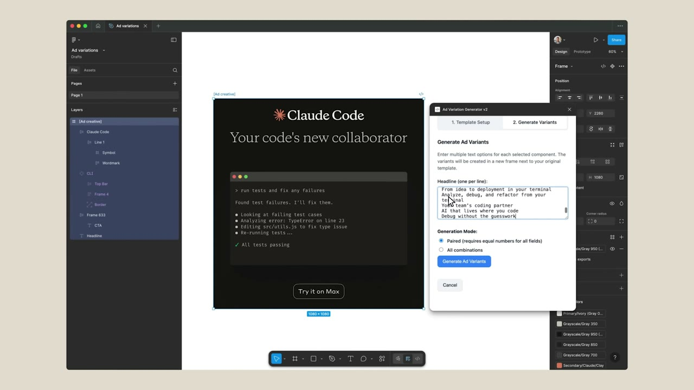
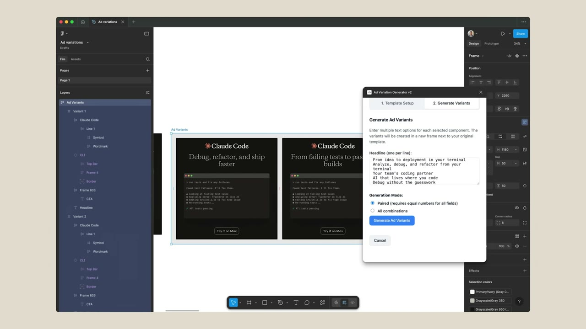

Anthropic 마케터는
어떻게 일할까요?
Claude를 만든 회사 Anthropic의 그로스 마케터 Austin Lau는 코드를 한 줄도 짜 본 적이 없었어요. 그런 그가 Claude Code로 작은 도구 두 개를 만들어, 광고 하나에 30분 걸리던 작업을 30초로 줄였어요. Anthropic이 직접 공개한 사례예요.
01원본 영상 · 글
How Anthropic uses Claude in Marketing · Claude 공식 유튜브 · 2분 42초 · 2026-01-26
Anthropic의 그로스 마케팅 팀이 Claude Code로 광고 제작 시간을 30분에서 30초로 줄인 방법 · claude.com 블로그 · 읽는 데 13분
릴스 속 영상은 이 공식 영상에서 핵심만 잘라 한국어 자막을 붙인 거예요.
02뭐가 힘들었나
- Figma에서 광고 프레임 복사기존 소재 프레임을 여러 번 복제해요.
- 문서로 가서 헤드라인 복사구글 문서에 정리해 둔 문구를 하나씩 복사해요.
- 다시 Figma에 붙여넣기 · 반복문구 10개 이상 × 화면 비율 여러 개만큼 왔다 갔다 해요.
구글 반응형 검색 광고(RSA)도 마찬가지예요. 헤드라인 15개를 글자 수 제한에 맞춰 시트에서 쓰고, 세고, 광고 화면에 붙여 넣는 일을 몇 주마다 반복했대요.
03그래서 만든 두 가지
광고 프레임을 고르고, 바꿀 헤드라인을 한 줄에 하나씩 한 번만 붙여 넣은 뒤 버튼을 누르면 문구마다 프레임이 하나씩 생겨요. 만드는 데 45분~1시간 걸렸고, 이후엔 할 때마다 30분 가까이 아낀대요.


/rsaClaude Code에 직접 만든 명령 /rsa를 치면 캠페인 데이터·기존 카피·키워드를 물어봐요. 미리 만들어 둔 Agent Skills(브랜드 말투, 제품 설명 정확성, RSA 작성 요령)에 맞춰 문구를 뽑고, 바로 올릴 수 있는 CSV 파일로 내보내요. 첫 결과를 그대로 쓰지 않고 주고받으며 다듬는 게 핵심이래요.
04Austin의 요청문 전문
Figma 플러그인을 만들 때 Claude Code에 처음 한 요청이에요(블로그 한국어판 문장 그대로).
Claude, 나는 Figma에서 작업하고 있어. 이 반복적인 복사와 붙여넣기의 과제를 정말 해결하고 싶어. 이 문제를 해결하는 데 도움이 되는 Figma 플러그인을 구축하는 것을 도와줄 수 있어?
나는 Figma에서 배너 광고를 만들고 있어. 같은 디자인에 헤드라인만 바꿔서, 1:1 · 4:5 · 9:16 사이즈별로 10개씩 만들어야 해. 지금은 프레임 복사 → 문서에서 문구 복사 → 붙여넣기를 계속 반복하고 있어. 헤드라인을 한 줄에 하나씩 붙여 넣고 버튼을 누르면, 문구마다 프레임이 하나씩 생기는 Figma 플러그인을 만들고 싶어. 코딩은 처음이니까 설치하고 실행하는 방법도 쉽게 알려 줘.
💡 Austin의 조언: 코딩을 몰라도 돼요. 뭐가 힘든지, 뭘 해결하고 싶은지를 분명하게 설명하는 게 전부예요.
05내 반복 업무 고르는 질문 3개
Austin은 "아주 작고 쉬운 것부터" 시작하래요. 아래에 셋 다 '네'면 첫 도구로 딱이에요.
- 매주 같은 순서로 하나요?순서가 매번 같으면 말로 설명하기 쉬워요.
- 대부분 복사 · 붙여넣기 · 창 전환인가요?판단이 아니라 옮기는 일이면 도구가 대신하기 좋아요.
- 결과가 맞는지 눈으로 바로 보이나요?잘못돼도 금방 알아챌 수 있어야 안심하고 써요.
엑셀 문구를 광고 칸에 한 칸씩 붙여 넣는 일이면 EP.07 연속 붙여넣기 툴도 참고하세요.
06써 보기 전에 꼭
- 30분 → 30초는 Anthropic이 밝힌 숫자예요. 내 업무에선 다를 수 있어요.
- 직접 만든 Figma 플러그인은 Figma 데스크톱 앱에서 개발용으로 불러와 써요(웹 브라우저 Figma에선 안 돼요).
- 회사 계정 · 광고 계정에 연결하기 전엔 보안 정책을 확인하고, 업로드 전 CSV는 한 번 눈으로 확인하세요.
대행사에서 AI 교육하는 현직 마케터가 직접 써 보고 정리해요.
인스타에서 팔로우